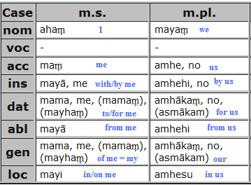
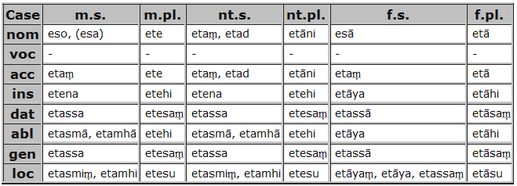
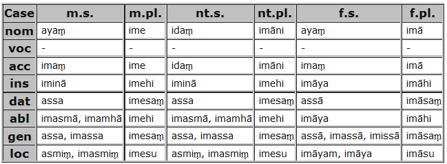
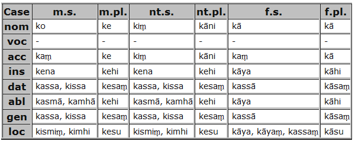
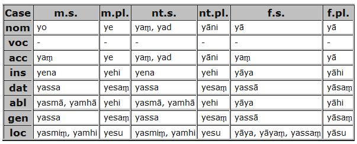

>>
Pali Toolbox
Frequent irregular declensions
declension of
ahaṃ
: I, my, we, our

Note: there is no disctinction of genre
——————oooOooo——————
declension of
eta
: this, that

——————oooOooo——————
declension of
idaṃ
: this

——————oooOooo——————
declension of
ka
: who, what, which (interrog. pronoun)

——————oooOooo——————
declension of
ta
: he, she, this, that
——————oooOooo——————
declension of
ya
: which, what, whatever

——————oooOooo——————
 >> Pali Toolbox
>> Pali Toolbox

 >> Pali Toolbox
>> Pali Toolbox